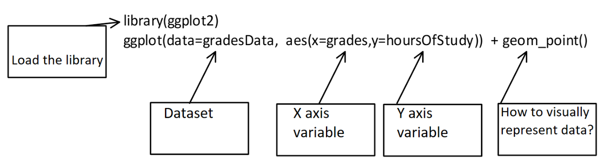
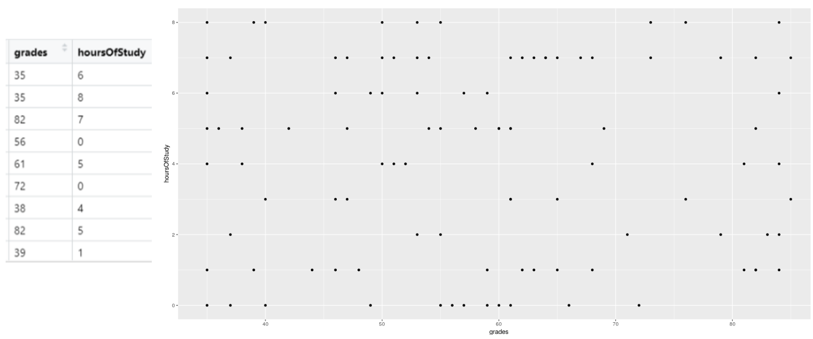
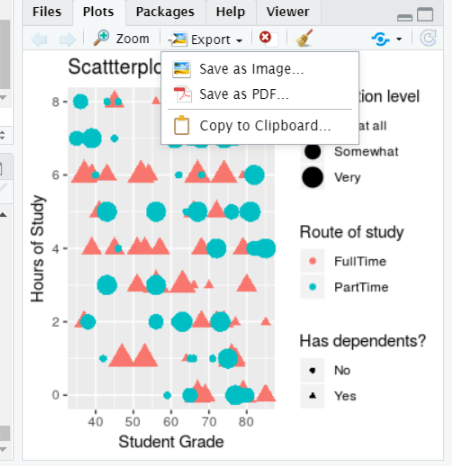

4 Graphing and data visualisation with R
4.1 Presenting data visually
4.2 Using GGplot to make graphs
4.3 By the end of this section, you will be able to:
- Describe the ggplot “grammar of visualisation”: coordinates and geoms
- Write a graph function to display multiple variables on a plot
- Amend the titles and legends of a plot
- Save plots in PDF or image formats
4.4 The “grammar of visualisation”
- Graphs are made up of 3 components:
- A dataset
- A coordinate system
- Visual marks to represent data (geoms)
The “grammar of visualisation” #2
::: {.cell layout-align=“center”} ::: {.cell-output-display}  ::: :::
- In the above example, the dataset is the studentData that we used previously.
- The grades variable is mapped to the X axis
- The hoursOfStudy variable is mapped to the Y axis
4.5 How to code a graph
- The graph is created using the following code:
- In this code, we specify the dataset, the variables for the X and Y axes and the geom that will represent the data points visually (in this case, each datum is a point)
4.6 The graph output
4.7 Changing the geoms leads to different visualisations
- If we change from points to lines, for example we get a different plot:
4.8 It is possible to represent more variables on the plot
- By specifying that colours of our points should be attached to the route variable, the data is now colour-coded
4.9 It is possible to represent more variables on the plot #2
- By specifying that size of our points should be attached to the satisfactionLevel variable, the size of the points adjusts
4.10 It is possible to represent more variables on the plot #3
- By specifying that shape of our points should be attached to the hasDependents variable, the shape of the points changes accordingly
4.11 Plotting summaries of data
- We can summarise the data (e.g. get the mean or sd) using the stat_summary() function
- Below we are making a bar chart with the mean grade for each route
4.12 Changing the axis labels and title on a plot
We can change the axis labels and title using the labs() command:
labs(x="Student Grade", y="Hours of Study", title = "Scattterplot of student data")4.13 Changing the legend on a plot
To change the legend, we use the labs() command too, and reference the relevant property (e.g. size, shape, colour)
labs(x="Student Grade", y="Hours of Study", title = "Scattterplot of student data", color="Route of study", size="Satisfaction level", shape="Has dependents?")library(ggplot2)
ggplot(data=studentData, aes(x=grades,y=hoursOfStudy)) +
geom_point(aes(color = route, size=satisfactionLevel, shape=hasDepdendants)) +
labs(x="Student Grade", y="Hours of Study", title = "Scattterplot of studentdata", color="Route of study", size="Satisfaction level", shape="Has dependents?")Warning: Using size for a discrete variable is not advised.
4.14 Storing plots to be recalled later
- Plots can be assigned to objects in R and recalled later, just like any other piece of data
library(ggplot2)
## Create plot and store it as "myPlot" object
myPlot <- ggplot(data=studentData, aes(x=grades,y=hoursOfStudy)) +
geom_point(aes(color = route, size=satisfactionLevel, shape=hasDepdendants)) +
labs(x="Student Grade", y="Hours of Study", title = "Scattterplot of studentdata", color="Route of study", size="Satisfaction level", shape="Has dependents?")4.15 Recalling a stored plot
4.16 Saving plots # 1
- Plots can be save using the export button in the plots tab

4.17 Plots can also be saved using code
- You might want to include code to save your plot in a script, for example
- This can allow greater control over the output file and plot dimensions: